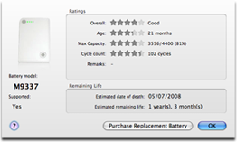

Diagnostics

The Diagnostics sheet collects a set of ratings that helps you to evaluate the status of your battery.
Capacity, charge cycles and age are rated from zero to five stars, with five stars being the best. An overall rating is also provided.
The Remaining life contains the estimated remaining life and the estimated date of death of your battery, calculated from the collected snapshots — the more the more accurate those predictions will be.
The diagnostics sheet also contains an illustration and details on your battery model. A convenient button to launch the Apple Store is provided for the batteries that are currently on the market.